{kind=link}

We look at questions about public administration, public goods and decentralisation, in the districts of Udaipur and Rajsamand in Rajasthan.
Why Rajasthan? Rajasthan is an interesting state for understanding the linkages between panchayati raj, transparency and public goods outcomes under conditions of poor per capita GDP. First, Rajasthan is one of the original `BIMARU' states. It has had a high poverty rate, a long history of drought, and of governments running public works programs as a mechanism for targeted transfers to poor people when faced with a drought. There is a long history of popular dissatisfaction with corruption in these public works programs. Further, Rajasthan is also unique in that it was the first state in India to embark on panchayati raj. Their act dates back to 1959. This has perhaps helped superior institutional development. Finally, Rajasthan was the centre of activism by groups such as MKSS on the right to information. It is, hence, an ideal test bed in trying to understand the role of transparency and panchayati raj in inducing public goods outcomes under conditions of poor economic development.
Why these districts? MKSS is located in the village of Devdungri, which is near Bhim at the north edge of Rajsamand district. Information from Udaipur and the southern edge of Rajsamand districts was interesting from the viewpoint of seeing the impact of the ideas of MKSS and their institutional impact, but not the hands-on high-quality activism. The former is scalable while the latter is not. We would like to understand the impact of institutions and ideas, but not idealistic and highly motivated activists.
While this perspective was our main focus, we were also opportunistic in using our presence there to sniff into all manner of aspects of public administration and public goods outcomes.
Udaipur district is a popular venue for writing papers. But is it a typical district in India?
| How often in India do you get a lakefront which is a perfectly straight walkway? This may suggest exceptional capacity in the public sector. | 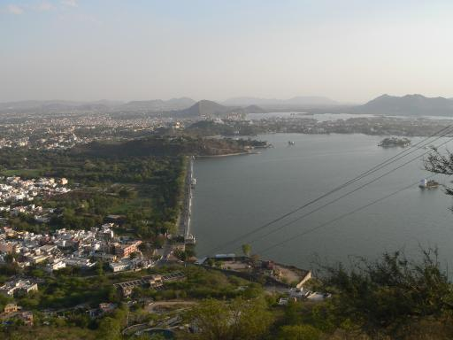 |
| Lakes of Udaipur city |
| And then, of course, there are the enormous tourist revenues associated with the lakes and palace hotels of Udaipur city. |
|
| Hotels built on on islands |
We should perhaps take everything about Udaipur district and its immediate environs with a small pinch of salt. These are surely benign conditions by Indian standards. But still, if in such a setting, it's possible to obtain good public goods in villages where the poverty rate exceeds 30%, that's progress.
Public works as a tool for drought relief have been taking place in Rajasthan for a long time. As an example, Umeed Bhavan at Jodhpur - the last huge palace built in the world - was a response to an extreme drought. In independent India, public works programs continued to be initiated by the government when faced with droughts. The problems of corruption in public works achieved political salience in Rajasthan many decades ago. When thinking about the depth of poverty in a drought, it was natural to ask where the payments made by the state government were going, and why they were not reaching the intended recipients.
MKSS is a `non party political organisation' which has played an important role in the evolution of these questions in Rajasthan. They focused on problems of transparency in public works. MKSS is located in the village of Devdungri, which is near Bhim at the north edge of Rajsamand district. MKSS has a staff strength of 14 and their direct impact is limited to their immediate neighbourhood, which is the north edge of Rajsamand district.
Working from the ground up, MKSS could observe what an individual worker got paid. In order to cross-check this against the payments made upstream, they needed access to records in the government. In this, they came up against the Official Secrets Act.
This led to a focus on transparency and the `right to information'. MKSS pioneered this effort, first achieving some limited de facto access to records at the panchayat level at an informal level through friendships with the bureaucracy; then successfully campaigning for panchayat-level right to information in Rajasthan; which went on to become a broader level effort on right to information in Rajasthan and then at the national government.
A process called `social audit' has been emphasised. Their term `social audit' connotes a comprehensive review of the expenditures and actual asset creation from public works programs. The effort is to track every payment made by the government, and verify that it was made correctly.
The primary focus of this `transparency movement' in Rajasthan is on public works. The `social audit' is almost exclusively focused on the issue of workers getting paid correctly in public works. In the last one year, it appears that Rs.100 crore has been spent under NREG in Dungarpur district (south of Udaipur) with remarkable single-digit leakage in percent, as verified by very detailed audits done by MKSS.
On our visit, we met elected representatives, government officials and activists in Udaipur and Rajsamand. No prior notice was given to the participants or officials. The information sources include:
Aastha is another remarkable NGO working in Rajasthan. At the time when we were there, Aastha and MKSS were jointly running a capacity building program at the `Aastha Training Centre' in Bedla, which is on the outskirts of Udaipur. Eleven teams of Aastha and MKSS staff, coupled with volunteers from the region and from all over the country, were fanning out to locations all over Udaipur district, conducting `social audits' of NREG and building awareness amongst citizens about their rights in the environment of NREG, RTI and panchayati raj. Each team spent roughly three days at one village.
On the terrace of the Aastha Training Centre was an assembly of the volunteers listening to talks on how NREG works, what are the pitfalls where corruption comes about, and how to do a social audit. One of the speakers was a state level civil servant. Perhaps half the audience was attentive and enthusiastic. There were a variety of dignitaries and visitors passing through. One set of visitors were from the Northwest Frontier Province in Pakistan.
We then hooked up with one of the eleven teams, at a village (a GP) called Dhar which is roughly a one-hour drive away from Udaipur, in Block Badgaon. It has one huge advantage: that of being connected by road to Udaipur. Many of the menfolk commute to Udaipur to work every day. Despite this, Dhar is poor. There are roughly 1000 families (a population of 4,500), of which roughly 350 are classified as BPL - implying a poverty rate of roughly 35%.
| How poor is Dhar? We understood the high labour intensity of work when we saw a man and wife and two cows engaged in a phenomenally inefficient process of crushing sugarcane. They would then go on to produce jaggery which would be sold in the city. | 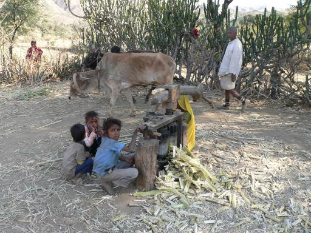 |
| Crushing sugarcane in Dhar |
| The man guides the cows; the woman threads sugarcane (a single stalk at a time) into the crusher; the children ran in for the photo op. |

|
| Labour intensity of crushing sugarcane in Dhar |
One thing that caught us by surprise was that even though Dhar has a population of 4,500, it is highly dispersed. Clumps of homes are dispersed over many kilometres; and this is a hilly region so it is costly to build roads or pipes that span these distances. This makes it much harder to produce public goods. A concentrated town of 4,500 is typical in the West, and efficiencies of public goods production can be obtained. But when dwelling places are dispersed in this fashion, it becomes much harder.
| The Aastha/MKSS team does a `padayatra' (a journey on foot) through the town, singing songs [Video], doing puppet shows, and doing talks about NREG, obtaining information from workers in NREG and cross-checking these against records in the panchayat, over a two day period. On the third day, there is a Gram Sabha meeting, where the Aastha/MKSS people show up with evidence about malfeasance (if any) that they are able to find. It is enough to make any civil servant quail. | 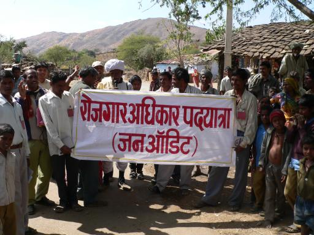 |
| MKSS/Aastha team with volunteers in Dhar |
| Shankar Singh of MKSS was part of the team. He is from North Rajasthan; he speaks the local language. He had an energetic and down to earth approach to the whole exercise. He would be extremely serious when seriousness was required, and do puppet shows when that was required to attract and involve people. | 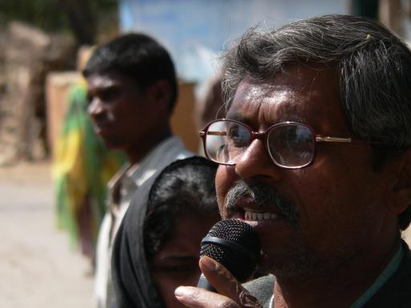 |
| Shankar, of MKSS |
| The team landed up at the office of the GP and started looking at records. For each person in NREG, where a `job card' has been issued, there is a page in a register. On this page, there are demographic characteristics of the household, and a photograph. Often the photograph would be of one person in the household only. Sometimes the job card spanned three generations. The social audit team raised objections about this because the NREG act says the every household with dependents should get a separate job card and the card should carry photographs of every member of the household. The household on the left edge of the picture has a thumbprint while the household on the right has a signature. In Bihar, the recordkeeping did not remotely achieve even this quality. | 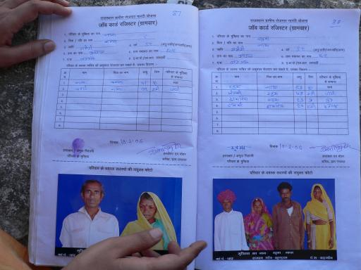 |
| Records of NREG on a per-family basis in the panchayat office |
| This young man is a sahayak recruited specifically for NREG implementation. He does not live in Dhar; he lives in Udaipur and commutes to Dhar. When the Aastha/MKSS team landed up, he was unable to answer a lot of questions about what was going on with NREG implementation. | 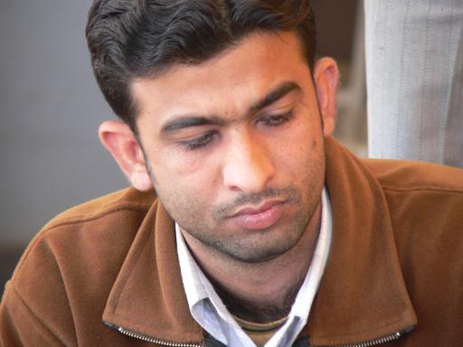 |
| Chagrined functionary |
The Aastha/MKSS team did well in the fine line between insistence and anger. They put pressure on the civil servant, saying that he is earning a salary and ought to be doing certain kinds of work. But at the same time, this did not cross the line into aggression and confrontational politics. This balance reflected a remarkable maturity of the team.
A simple piece of arithmetic which was repeatedly trotted out was the number obtained by multiplying the number of job cards, times 100 days a year, times Rs.73/day. This was the money that could have come from the government into this village - if only the populace and the civil servants handled their end of the bargain properly.
| This member of MKSS is from the Bhim area. He had knowledge and experience about MKSS and NREG, and was very effective in communicating with the local people in Dhar. | 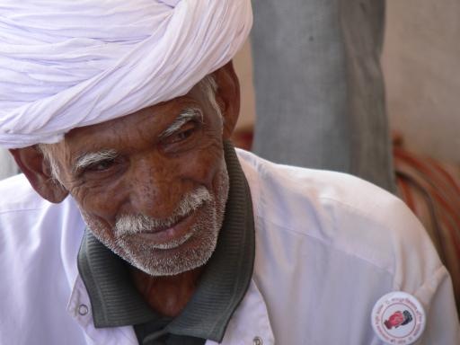 |
| MKSS volunteer |
| To some extent, we felt that the civil servants were intimidated by the quality of the people who had landed up at their doorstep. | 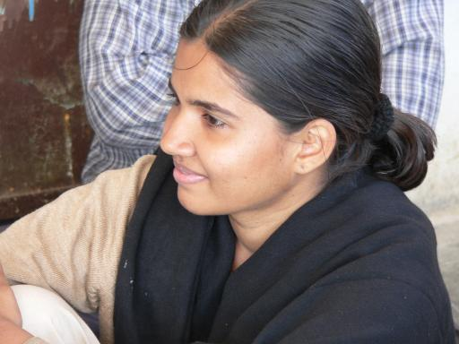 |
| Priyanka Verma of MKSS |
| The gram sachiv is the civil servant recruited by the state government who is the `secretary' for the gram panchayat. He confessed to being startled at this team having landed up on his beat on a peaceful Sunday afternoon. | 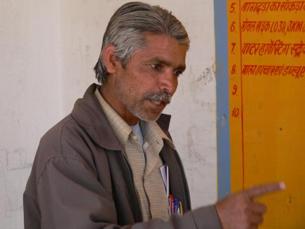 |
| The gram sachiv of Dhar |
The task of social audit is tedious, hard work. It involves comparing information derived from citizens against information found in the records of the gram panchayat. This should ideally be done by an IT system, based on computer records at the GP level. As awareness of this vulnerability to cross-checking is permeating in Rajasthan, the mechanism of malfeasance is changing, to a method where both the records at the GP and the job cards show wrong information.
| Two kinds of malfeasance are now taking place. First, the state government staff collaborates with some NREG workers who actually do no work. The work done by the entire set of workers is divided by a bloated denominator, thus showing that everyone did inadequate work in the day, thus inducing a lower payment per person. The second line of attack is where the worker is told by the civil servant that he is being paid less and is told to not complain about it. In both cases, the information in the job cards agrees with the information in the GP. | 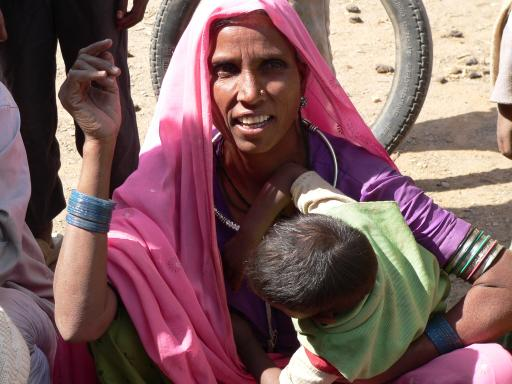 |
| Dissatisfied with NREG in Dhar |
| In this hamlet, one person came up and said that he had a job card, but he was doing fine for himself and did not want even one of the hundred days of employment that he was entitled to under NREG. | 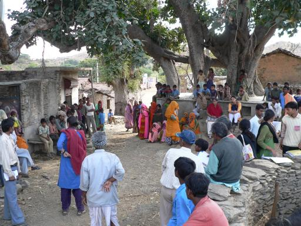 |
| Town meeting in one of the hamlets in Dhar |
The Aastha/MKSS people are averse to migration, arguing that atleast for 100 days, a person shouldn't have to go to the city if (net of transportation costs) his wage works out to below that paid by NREG (Rs.73 if a full day's work is done). However, in the big picture, India's economic development is going to come out of a low skill workforce leaving the villages and migrating to the cities. More importantly, a person seeking to do labour supply in the city has to build up human networks and specialised human capital. Dropping out of this market for 100 days/year is not a rational strategy for the worker - regardless of how well NREG works.
In Dhar, the Aastha/MKSS team emphasised that NREG was a demand driven program, that the GP has to maintain a project shelf and offer projects when the individual demands work. This was in sharp contrast with the situation in Bihar, where there were targets given to the district collector and a budgetary grant of a certain amount came down to the village.
We spent a day visiting Molela, a village in Rajsamand district. This was an unannounced visit, accompanying the `CEO of the Zilla Parishad', Mr. Jitendra Upadhyay, who was going for an inspection here. Mr. Upadhyay's team had gone to Molela for an inspection earlier in the day (before we had showed up). He was to go to Molela to check their work and complete this inspection. We were spontaneously offered an opportunity to go with him.
As we found out later, even though Molela is in Rajsamand district, nobody from MKSS has ever been there. This is admittedly a sample size of one; but it is not a case of being shown a Potemkin village.
| This concept of an `inspection' of a gram panchayat is a recent innovation, initiated by Principal Secretary (RD) in Rajasthan. Each district has a `CEO' of the Zilla Parishad and in many districts, the CEO has an assistant. In addition, there are Block Development Officers at the block level. The inspection framework involves filling out a two-page form about the processes in the panchayat. Each CEO is required to inspect 20 panchayats per year and if he has an assistant then the assistant is to inspect another 30 panchayats a year. | 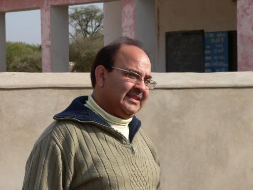 |
| Jitendra Upadhyay, CEO of the ZP of Rajsamand |
The quality of the inspection is, obviously, sensitive to the personality and style of the person conducting the inspection. Mr. Upadhyay did an outstanding job, taking the trouble of going to far-flung locations in the village in order to do physical inspection of public works. At every step of the inspection, he was very open with us, passing on the documents to us after he had finished looking at them.
| Sudhir is a young, educated, enthusiastic sarpanch. In Bihar, there is a separation between the `mukhiya' and the `sarpanch'. In Rajasthan, there is only a `sarpanch'. | 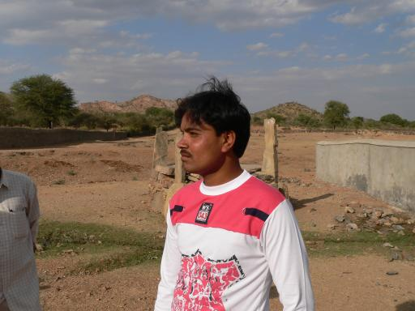 |
| Sarpanch of Molela |
The problem of political accountability surfaces here also, as it does in Bihar. By the rules of reservation, Sudhir will not be able to run for sarpanch in the next election. Mr. Upadhyay explained that Sudhir has ambitions of district-level politics, which is what gives him incentives to do a good job of his stint as sarpanch.
The inspection process was pretty comprehensive. Helped by the form, Mr. Upadhyay and his staff ran through a comprehensive checklist of the activities of the village. The sarpanch and the sachiv were on their toes showing records. "Have you done X?" and "Are your records on X sound?" were the two lines of questioning.
The quality of the activities of the GP, and the corresponding recordkeeping, was simply extraordinary. We sniffed into the past and found good records for earlier years also. A delicious feature was the use of photographs: for all public works, there was a photograph of the ground prior to construction, a few photographs of the construction in progress, and then a picture of the finished product.
As in Bihar, we asked Sudhir our standard question: "What are your key responsibilities?". For the first time, the answer that came back put education at rank 1.
In Molela, for the first time, we felt that it might make sense to send the three Fs down to such a gram panchayat. The sarpanch, the civil servant attached to him, the recordkeeping, the transparency: these have combined to create an environment of accountability and public administration where it now makes sense to send more untied money to the GP.
| The inspection took us to one public works effort being undertaken under SGRY - the construction of a boundary wall for a school. Unlike NREG public works, there was money here for cement which was layered on top of a stone wall. | 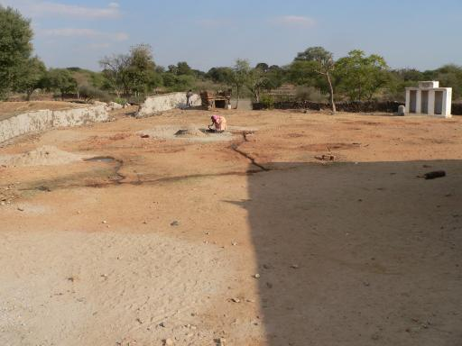 |
| One of the public works - building a boundary wall for the school |
| 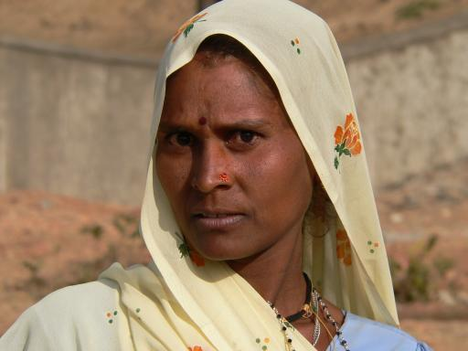 | |
| Woman working at this project |
| 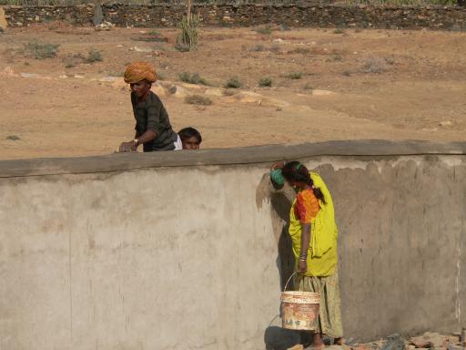 | |
| Women working at the project |
| The minimum wage is Rs.73, but these women were being paid the market wage, Rs. 50, on the grounds that they do less than a man's work. This ground reality helps reduce the economic distortion caused by the minimum wage. | 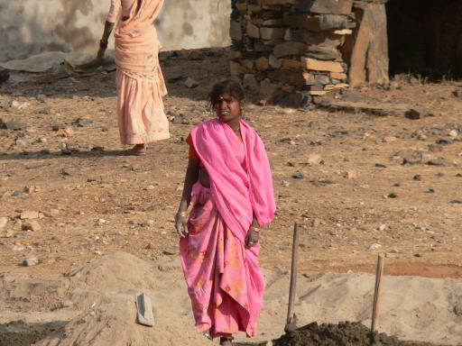 |
| Women working at the project |
There is no direct link between MKSS and Molela. However, it is not difficult to trace the indirect relationships between the RTI effort in Rajasthan as a whole with the facts on the ground at Molela. The RTI agenda has pushed the quality of recordkeeping. It has increased the sense amongst the civil service and the politicians that they will be asked questions. Most importantly, it has generated myriad changes in the mechanisms of public administration - e.g. the use of photographs, the idea of inspections. These changes in the thinking and processes amongst civil servants and politicians constitute a sustained impact - they do not rely on a continued engagement with NGOs. These changes extend far beyond the direct impact of MKSS - e.g. nobody from MKSS has ever visited Molela.
We went to an inspection of one PHC. The ANM was educated to the 10th standard and had a permanent job. On one hand, the health outcomes sounded very good. In the last one year, there were 133 births and one child died. This is well below the Indian IMR. In the last 19 years, no mother had died in childbirth, which is also well below the Indian MMR.
Yet, the ANM reported that in a village of 5,000 people, she had just 6-7 people walk in every day. This is a tiny number; you'd have to have a miraculously healthy population to achieve this.
It turns out that there is a two-part explanation of why citizens are not opting for public health services but attaining good health outcomes.
First, there is absolutely no incentive for the ANM to do any work for the citizen. In the entire district, there are roughly 40 complaints a year against the ANM, and out of them, two result in an ANM getting transferred. No ANM ever gets sacked. Citizens are also unlikely to complain about the ANM functioning when they know that it is unlikely that action will be taken against the ANM.
Second, this village appears to be harnessing good income growth, owing to physical proximity to the thriving marble trade. In the immediate neighbourhood of the village, there are many jobs in processing marble. Hence, the story appears to be one of people achieving higher incomes and then defecting away from public services. People do not come to the ANM and go to the local quacks(who are no less qualified than her) or the the city which is well connected with this area through roads.
| The road is dotted with numerous firms who process slabs of marble and sell sheets that are used in home construction. | 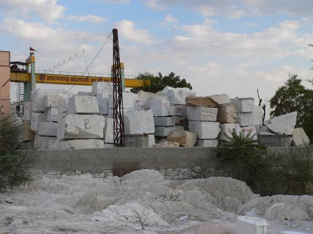 |
| Inventory of slabs of marble |
| Some firms, in addition, are engaged in the highly labour intensive process of using power tools to carve the marble and make specialised objects, such as `mini-temples', which are used in homes. | 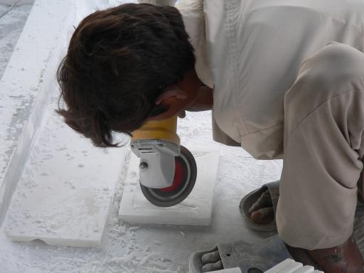 |
| Craftsman adding value to marble |
| 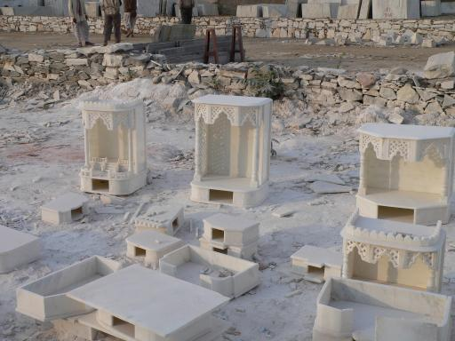 | |
| Finished mini-temples |
Once again, it feels that the most powerful tool in health policy is building roads.
While at this village, we discovered that the National Rural Health Mission (NRHM) has built in a big cash subsidy aimed at bringing customers back to government hospitals. If a pregnant woman chooses to go to a private hospital, the full cost has to be borne by her. But if she comes to a government hospital, (a) the treatment is free and (b) she is given a gift of Rs.1,800. It will be interesting to see what this does to the market share of government hospitals, and to the MMR. This `negative voucher' situation is similar to the situation in education, where government schools are free, give out free meals and throw in some other perks, while private schools are unfree and offer no perks.
Our main finding is that the quality of recordkeeping at the PRI level was outstanding, particularly when compared with Bihar. Further, information and official records in both districts were freely available. No one brought up official secrecy or asked why information was being sought. Detailed information and records were willingly shown, without hesitation, in both districts.
Record keeping in both Udaipur and Rajsamand district was equally good. The efforts of MKSS appear to have led to improvements in the systems, institutions and the quality of record keeping. What started as a bottom-up movement by people demanding their due from the government appears to have turned today into a top-down strategy where government officials are now bound by the amended Rajasthan PRI Act, which ensures availability of information, and the Right to Information Act. The media and general awareness of PRIs about their rights has created an environment in which this works.
MKSS has a staff strength of 14 and has been active only in a limited areas. It was therefore interesting to ask whether the effort of achieving transparency is scalable and can be achieved without the presence of a strong core of activists. As stated above, our finding was that even in areas where there was no MKSS presence, there was a remarkable culture of transparency. This had come about because of greater awareness of the public about their rights through the media, as well as the systems that have been put in place by the state government that ensure that all panchayat level records are accessible to the people. District and block level officers have an incentive to maintain good records so that if and when a demand for information comes up, there is no trouble.
As a consequence, even in places where direct activism is absent, the institutional and legal changes that have been made are inducing a much higher level of transparency than was prevalent earlier. It thus appears that this effort can be scaled up even without having an MKSS in every village in the state or country.
Social audits and cross-checking payments is clearly very important in public works programs for building roads. Given a minimal level of care in rules and procedures, it is easy to ensure that public works do not constitute private goods. Transparency in the choice of what public works are built, and in the implementation, has given improved planning and execution. It is easy to see strong links from transparency to improved public works to improved GDP growth. If we think of the principal-agent problem of public works under NREG in Udaipur district, using the five-step naming scheme of WDR 2004:
In a narrow class of problems -- the NREG style implementation of public works programs with 90% of the money spent on labour -- the accountability mechanisms in Udaipur and Rajsamand appear to be functioning well. Part of this story lies in the success of the transparency movement. But equally, part of this story is about a substantial political focus upon a very narrow class of problems: public works programs funded by the centre involving no external contractor and where only 10% of the expense is on materials.
If even a slightly more complex problem appeared -- e.g. recruiting a private vendor to build a road where 60% of the money was to be spent on materials -- the existing systems and procedures in Rajasthan might well be quite inadequate.
Is transparency a binding constraint in delivering health and education? Even though Rajasthan seems to have a strong environment on recordkeeping and on availability of information to citizens, Rajasthan hovers around the national average when it comes to teacher absenteeism or health worker absenteeism. When a teacher does not show up to work, or a teacher does not teach, citizens are very much aware about the true state of affairs. There is not much that RTI legislation adds to the information set of a citizen. This is in contrast with (say) road building where citizens do not obviously know how badly the road has been built, unless an effective RTI gives access to details about how the road project was executed. In the case of health or education, the core weakness in India lies in the lack of `enforcement' - there is no cost for the front line provider to not do his job.
There is some role, from a procurement perspective, for cross-checking what government health facilities are buying, where an RTI emphasis could have a modest impact. But when it comes to the core business of principal-agent problems between State and civil servant in the discretionary transaction-intensive public services of education and health, it appears that transparency is not of essence.
While a transparency agenda may not directly link to education and health, there are strong indirect links:
The RTI agenda does seem to have pushed the quality of recordkeeping and improved the efficacy of public works programs in Rajasthan. It has increased the sense amongst the civil service and the politicians that they will be asked questions. Most importantly, it has generated myriad changes in the mechanisms of public administration - e.g. the use of photographs, the idea of inspections. It appears that in this environment, the NREG can be fairly effectively implemented. These changes in the thinking and processes amongst civil servants and politicians constitute a sustained impact - they do not rely on a continued engagement with NGOs.
Though the emphasis on record keeping and transparency is not a sufficient condition for better provision of public goods, it is a necessary condition for better provision of a wide variety of public goods.
Based on these experiences, it appears that Rajasthan has a remarkable state of readiness for devolution of the three Fs. At the same time, there are many challenges in moving from NREG-focused systems and procedures to the larger problems of public goods. The high quality recordkeeping in Rajasthan suggests that it can be an ideal location for creating datasets about local government and public goods.
A very interesting information-based strategy for improving local government, on the scale of the full country, can be conceived: this would involve an independent agency which fills out a questionnaire about the processes and recordkeeping quality in a random sample of villages in a state. The form used for inspections of GPs in Rajasthan is a mature draft of this questionnaire. The national press could highlight the strong states and the weak states and thus put pressure on chief ministers. These scores could possibly be woven into conditionalities of loans to states. This data could then be linked up to public goods outcomes, thus offering measurement about the links between improvements in processes of local government and improvements in public goods.
Rajasthan holds many lessons for other states:
Back up to Ila Patnaik's home page
{kind=link}
{kind=link}
{kind=link}
{kind=link}
{kind=link}
{kind=link}
{kind=link}
{kind=link}
{kind=link}
{kind=link}
{kind=link}
{kind=link}
{kind=link}
{kind=link}
{kind=link}
{kind=link}
{kind=link}
{kind=link}
{kind=link}